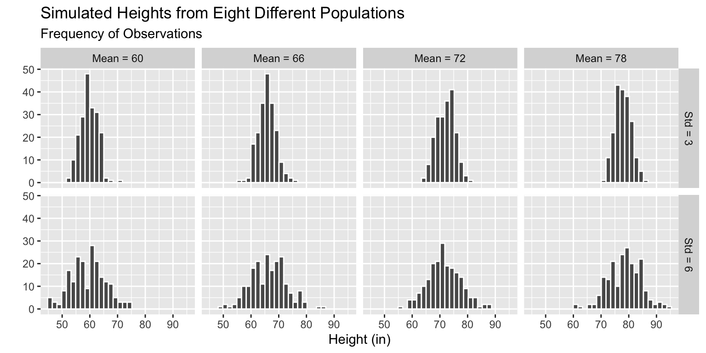

get_shared_birthdays <- function(n = 50){
bday_data <- tibble(person = 1:n,
bday = sample(1:365,
size = n,
replace = TRUE)
)
}Simulating Probabilities & Datasets
Today we will…
- New Material
- Thinking through a probability simulation task
- Four Steps to Simulate Datasets
- In-line R Code
- Survey on Experiences in STAT 331 / 531
- Work Time
- Lab 9
- Challenge 9
The Birthday Problem
What the probability that at least two people in a group of randomly selected people share a birthday?
Our Task
Simulate the approximate probability that at least two people have the same birthday (same day of the year, not considering year of birth or leap years).
Writing a function to…
- simulate the birthdays of 50 people.
- count how many birthdays are shared.
- return whether or not a shared birthday exists.
Step 1 – simulate the birthdays of 50 people
. . .
Why did I set
replace = TRUE for the sample() function?
Using Function to Simulate Many Probabilities
Use a map() function to simulate 1000 datasets.
sim_results <- map_lgl(.x = 1:1000,
.f = ~ get_shared_birthdays(n = 50)). . .
- What proportion of these datasets contain at least two people with the same birthday?
sum(sim_results) / 1000[1] 0.965Four Steps to Simualate Datasets
Simulate Multiple Datasets - Step 1
Write a function to simulate height data from a population with some mean and SD height.
The user should be able to input:
- how many observations to simulate
- the mean and standard deviation of the Normal distribution to use when simulating
Pencil out your function!
sim_ht <- function(n = 200, avg, std){
tibble(person = 1:n,
ht = rnorm(n = n, mean = avg, sd = std))
}sim_ht(n = 5,
avg = 66,
std = 3)# A tibble: 5 × 2
person ht
<int> <dbl>
1 1 70.9
2 2 61.6
3 3 62.4
4 4 71.3
5 5 64.1Simulate Multiple Datasets - Step 2
Create a set of parameters (mean and SD) for each population.
crossing(mean_ht = seq(from = 60, to = 78, by = 6),
std_ht = c(3, 6))# A tibble: 8 × 2
mean_ht std_ht
<dbl> <dbl>
1 60 3
2 60 6
3 66 3
4 66 6
5 72 3
6 72 6
7 78 3
8 78 6Simulate Multiple Datasets - Step 3
Simulate datasets with different mean and SD heights.
crossing(mean_ht = seq(from = 60, to = 78, by = 6),
std_ht = c(3, 6)
) |>
mutate(ht_data = pmap(.l = list(avg = mean_ht, std = std_ht),
.f = sim_ht
)
)# A tibble: 8 × 3
mean_ht std_ht ht_data
<dbl> <dbl> <list>
1 60 3 <tibble [200 × 2]>
2 60 6 <tibble [200 × 2]>
3 66 3 <tibble [200 × 2]>
4 66 6 <tibble [200 × 2]>
5 72 3 <tibble [200 × 2]>
6 72 6 <tibble [200 × 2]>
7 78 3 <tibble [200 × 2]>
8 78 6 <tibble [200 × 2]>. . .
Why am I getting a tibble in the
ht_data column?
Simulate Multiple Datasets - Step 4
Extract the contents of each list!
# A tibble: 10 × 4
mean_ht std_ht person ht
<dbl> <dbl> <int> <dbl>
1 60 3 1 61.1
2 60 3 2 59.0
3 60 3 3 64.2
4 60 3 4 60.6
5 60 3 5 58.5
6 60 3 6 59.9
7 60 3 7 60.5
8 60 3 8 59.1
9 60 3 9 58.4
10 60 3 10 60.8Why do I now have person and ht columns?
How many rows should I have for each mean_ht, std_ht combo?
nest() and unnest()
- We can pair functions from the
map()family very nicely with twotidyrfunctions:nest()andunnest(). - These allow us to easily map functions onto subsets of the data.
nest()
Nest subsets of the data (as tibbles) inside a tibble.
- Specify the column(s) to create subsets on.
mtcars |>
nest(.by = cyl)# A tibble: 3 × 2
cyl data
<dbl> <list>
1 6 <tibble [7 × 10]>
2 4 <tibble [11 × 10]>
3 8 <tibble [14 × 10]>unnest()
Un-nest the data by row binding the subsets back together.
- Specify the column(s) that contains the subsets.
mtcars |>
nest(.by = cyl) |>
unnest(data) |>
slice_head(n = 10)# A tibble: 10 × 11
cyl mpg disp hp drat wt qsec vs am gear carb
<dbl> <dbl> <dbl> <dbl> <dbl> <dbl> <dbl> <dbl> <dbl> <dbl> <dbl>
1 6 21 160 110 3.9 2.62 16.5 0 1 4 4
2 6 21 160 110 3.9 2.88 17.0 0 1 4 4
3 6 21.4 258 110 3.08 3.22 19.4 1 0 3 1
4 6 18.1 225 105 2.76 3.46 20.2 1 0 3 1
5 6 19.2 168. 123 3.92 3.44 18.3 1 0 4 4
6 6 17.8 168. 123 3.92 3.44 18.9 1 0 4 4
7 6 19.7 145 175 3.62 2.77 15.5 0 1 5 6
8 4 22.8 108 93 3.85 2.32 18.6 1 1 4 1
9 4 24.4 147. 62 3.69 3.19 20 1 0 4 2
10 4 22.8 141. 95 3.92 3.15 22.9 1 0 4 2Simulate Multiple Datasets - Step 5
Plot the samples simulated from each population.
Code
fake_ht_data |>
mutate(across(.cols = mean_ht:std_ht,
.fns = ~as.character(.x)),
mean_ht = fct_recode(mean_ht,
`Mean = 60` = "60",
`Mean = 66` = "66",
`Mean = 72` = "72",
`Mean = 78` = "78"),
std_ht = fct_recode(std_ht,
`Std = 3` = "3",
`Std = 6` = "6")
) |>
ggplot(mapping = aes(x = ht)) +
geom_histogram(color = "white") +
facet_grid(std_ht ~ mean_ht) +
labs(x = "Height (in)",
y = "",
subtitle = "Frequency of Observations",
title = "Simulated Heights from Eight Different Populations")`stat_bin()` using `bins = 30`. Pick better value with `binwidth`.
In-line Code
We can automatically include code output in the written portion of a Quarto document using `r`.
. . .
my_rand <- rnorm(1, mean = 0, sd = 1)
my_rand[1] -1.936856Type this: My random number is `r my_rand`.
To get this: My random number is -1.936856.
Lab 9: Data Simulation Exploration
- One required probability simulation
- One optional dataset simulation
Challenge 9: Formatting Nice Tables
- Change tables from Lab 8 using
kable() - Change table(s) from Lab 9 using
gt()
Survey on Experiences in STAT 331 / 531
Anonymous Google Form: https://forms.gle/wtXGQTFq5yzrX32W6
. . .
If we get an 85% completion rate I will bring pizza to class next Thursday.